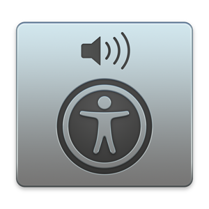
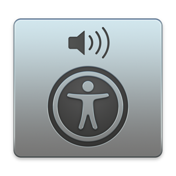
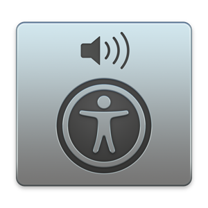

Screen readers
Software that translates on-screen content into synthetic speech
 


W3C Developer meetup, San Francisco November 2017
Léonie Watson ~ The Paciello Group (TPG)
Software that translates on-screen content into synthetic speech

<label for="this">Bold</label>
< type="checkbox" id="this" checked>

Define how role, state, properties, and keyboard focus for native elements are handled in the browser
When native accessibility information is unavailable
Use native HTML whenever possible
<button>Tequila!</button>
var button = document.getElementById('button');
button.addEventListener('click', doSomething, false);
<span id="button" role="button" tabindex="0">Tequila!</span>
var button = document.getElementById('button');
button.addEventListener('click', doSomething, false);
button.addEventListener('keydown', function(event) {
if (event.keyCode == 13 || event.keyCode == 32) {
doSomething();
}
});<button role="heading" aria-level="1">Tequila!</button>When you create custom components it's your responsibility to make it work with the keyboard
<a href="#here" id="button" role="button">Tequila!</a>
var button = document.getElementById('button');
button.addEventListener('keydown', function(event) {
if (event.keyCode == 13) {
doSomething();
}
});<span id="button" role="button" tabindex="0">Tequila!</span>
var button = document.getElementById('button');
button.addEventListener('keydown', function(event) {
if (event.keyCode == 13 || event.keyCode == 32) {
doSomething();
}
});<body role="application">...</body>Stops screen reader commands from working and hands navigation over to the webapp
Many ARIA roles trigger applications mode automatically, including:
Listen for keydown and capture keycodes:
Accessibility Object Model (AOM): experimental JavaScript API that enables developers to modify the accessibility tree


Has landed in Chrome Canary behind the flag:
--enable-blink-features=AccessibilityObjectModel<span id="button">Tequila!</span>
<div id="container">
Makes me happy!
</div>var button = document.getElementById('button');
var container = document.getElementById('container');button.setAttribute('tabindex', 0);
container.setAttribute('hidden', true);button.accessibleNode.role = "button";
button.accessibleNode.expanded = false;var content = new AccessibleNodeList();
content.add(container.accessibleNode); function disclose(event) {
if(container.getAttribute('hidden')) {
button.accessibleNode.expanded = true;
button.accessibleNode.controls = content;
container.removeAttribute('hidden');
}
else {
button.accessibleNode.expanded = false;
button.accessibleNode.controls = null;
container.setAttribute('hidden', true);
}
} button.addEventListener('click', disclose, false);
button.addEventListener('keydown', function(event) {
if (event.keyCode == 13 || event.keyCode ==32) {
disclose();
}
});Thank you